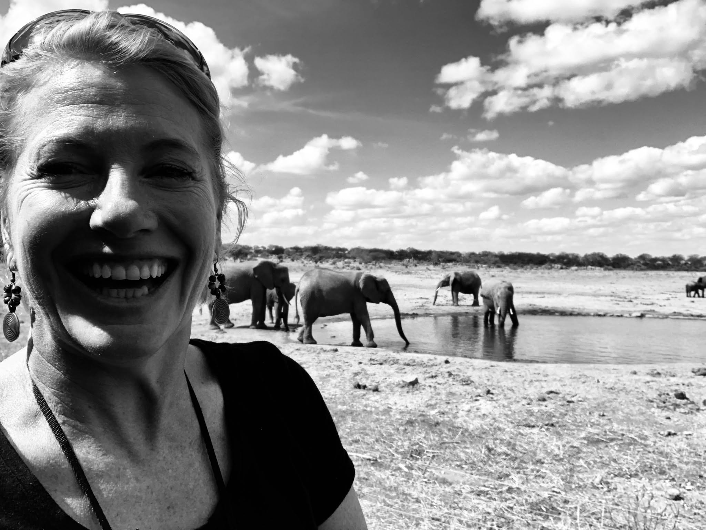

Animal movement ecology
Movement strategies, behavioural states, habitat selection and space use derived from wildlife telemetry.
Conservation ecologist · Movement ecology · Southern Africa
I am a conservation ecologist specialising in animal movement ecology, transboundary conservation and applied wildlife research in southern Africa.
My work integrates wildlife telemetry, spatial analysis and ecological theory to understand how animals move through changing landscapes and to improve practical conservation decision-making. My research focuses particularly on elephants, lions, ecological connectivity, thermal ecology and human–wildlife landscapes.
I founded Wildlife Free to Roam to strengthen movement ecology capacity across Africa through open science, postgraduate training, collaborative research and practical conservation partnerships.

Movement strategies, behavioural states, habitat selection and space use derived from wildlife telemetry.
Ecological connectivity and wildlife persistence across protected areas, international borders and human-modified landscapes.
Research designed to inform protected-area management, coexistence, conservation policy and capacity development.
Current initiative
Wildlife Free to Roam connects rigorous ecological research with conservation practice, quantitative training and collaborative capacity development across Africa.
Read more →